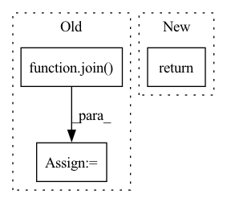

Pattern ID :10627

Before Change
def getFiles(self, dirName):
files_set_1, labels_set_1 = self.getListOfFiles(join(dirName, "GoodImg", "Bmp"))
files_set_2, labels_set_2 = self.getListOfFiles(join(dirName, "BadImag", "Bmp"))
return files_set_1+files_set_2, labels_set_1+labels_set_2
After Change
// files_set_2, labels_set_2 = self.getListOfFiles(join(dirName, "BadImag", "Bmp"))
// all_files = files_set_1+files_set_2, all_labels = labels_set_1+labels_set_2
return files_set_1, labels_set_1
def __init__(
self,
In pattern: SUPERPATTERN
Frequency: 3
Non-data size: 3
Instances
Fragment ID: 36869635
Project Name: kkirchheim/pytorch-ood
Commit Name: d181b68458774d57af631eadf4a21837e7c50cad
Time: 2022-07-20
Author: 62721668+BudhaTronix@users.noreply.github.com
File Name: src/pytorch_ood/dataset/img/chars74k.py
M Class Name: Chars74k
N Class Name: Chars74k
M Method Name: getFiles(2)
N Method Name: getFiles(2)
M Parent Class: VisionDataset
N Parent Class: VisionDataset
M File Name: src/pytorch_ood/dataset/img/chars74k.py
N File Name: src/pytorch_ood/dataset/img/chars74k.py
M Start Line: 57
M End Line: 59
N Start Line: 59
N End Line: 59
'>
Before Change
def get_spk_world_feats(spk_fold_path, mc_dir_train, mc_dir_test, sample_rate=16000):
paths = glob.glob(join(spk_fold_path, "*.wav"))
spk_name = basename(spk_fold_path)
train_paths, test_paths = split_data(paths)
f0s = []
After Change
normalised_coded_sp,
allow_pickle=False)
return None
def process_spk(spk_path, mc_dir_train, mc_dir_test):
'>
Fragment ID: 36869638
Project Name: samuelbroughton/stargan-voice-conversion-2
Commit Name: 0e5c753a5a3f39906225631b8cf4547a1d51eb75
Time: 2020-03-02
Author: broughtonjsam@gmail.com
File Name: preprocess.py
M Class Name: AnonimousClass
N Class Name: AnonimousClass
M Method Name: get_spk_world_feats(4)
N Method Name: get_spk_world_feats(4)
M Parent Class:
N Parent Class:
M File Name: preprocess.py
N File Name: preprocess.py
M Start Line: 47
M End Line: 75
N Start Line: 114
N End Line: 120
'>
Before Change
os.remove("saved.tiff")
img = raw_buf.postprocess(use_auto_wb=True, no_auto_bright=False, output_bps=16, user_black=0)
img = (img.astype(np.float32) / 65535 * 255).astype(np.uint8)
save_path = join(dirname(path), basename(path).replace("tiff", "png"))
cv2.imwrite(save_path, img[:, :, ::-1])
return save_path
After Change
img_rgb = raw_buf.postprocess(use_auto_wb=True, no_auto_bright=False, output_bps=16, user_black=0)
img_rgb = (img_rgb.astype(np.float32) / 65535 * 255).astype(np.uint8)
return img_rgb
def _main(path, ds_path):
'>
Fragment ID: 36869636
Project Name: zzh-tech/estrnn
Commit Name: 22f3597cb8c7ba5c524873b1a9156d5b4ddd892c
Time: 2021-01-14
Author: zzh.tech@gmail.com
File Name: train/test_isp.py
M Class Name: AnonimousClass
N Class Name: AnonimousClass
M Method Name: raw2rgb(1)
N Method Name: raw2rgb(1)
M Parent Class:
N Parent Class:
M File Name: train/test_isp.py
N File Name: train/test_isp.py
M Start Line: 12
M End Line: 21
N Start Line: 17
N End Line: 19